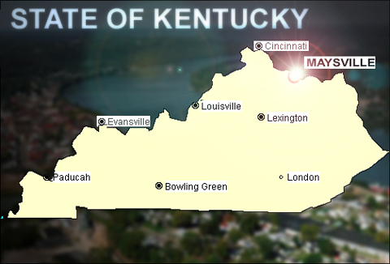
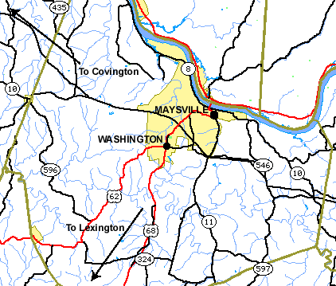

DESCRIPTION
A recent claim of a UFO sighting inthe Maysville, Kentucky area appeared on the National UFO Reporting Centerwebsite, maintained by Peter Davenport. The appearance of the report wasnoted by Cincinnati researcher Donnie Blessing and passed alongfor further consideration.
The report states that around 7:00 p.m.on February 2, 2002, a "chevron-shaped" object was sighted over the OhioRiver near Maysville. The witness describes the object as "patrolling"between power plants on both the Ohio and Kentucky sides of the river.The event was reported two days later on February 4th and Davenport attacheda comment that "many sightings" were also reported around the country onFebruary 2nd.
Apparently the submission of this Maysville,KY sighting to N.U.F.O.R.C. was filed anonymously, making investigationof the claim all the more suspect and difficult. Nevertheless it shouldbe stressed that anonymity is a sincere consideration among many who honestlybelieve they have observed something in the sky they cannot identify. Sowhile a report submitted anonymously is more difficult to follow up on,it's viability as a legitimate event is not necessarily diminished.
And in this instance, anonymity of theprimary claimant served only as a temporary inconvenience as further investigationauthenticated the actuality of a very unusual incident.
INVESTIGATION
I began inquiring into the Maysvilleclaim by attempting to identify the power stations in question, one onthe Ohio side and one on the Kentucky side of the river.
I first inquired with the MaysvilleIndependent-Ledger newspaper to ascertain if their office had receivedany calls or published a report about such an incident. They respondedby informing of no such calls or complaints, but were helpful with providingthe names of the power stations on the Ohio and Kentucky sides of the river.On the Ohio side, two stations were located on U.S. Route 52 near Manchester.These were the Killen and Stuart power stations, both operated by the DaytonPower & Light Company. On the Kentucky side of the river, the stationwas identified as the East Bend Kentucky Power Plant.
I then contacted the Mason County Sheriff'soffice (606) 564-3309 and the receptionist taking the call said 'nothingwas reported' there. She did suggest that I call 606-564-9411, which isthe Maysville City Police Department. Evidently they dispatch "forthe county" after 5:00 p.m.
Calling the Maysville P.D., I talkedto a very professional, polite and helpful gentleman at the department.He informed that the Maysville newspaper had earlier called regarding thisissue (in response to my previous inquiry with them) and also said thathe had no knowledge of any such reports. He suggested I talk with VictorHamm,a Brown County, Ohio resident who is a researcher of UFO sightings.
As per this suggestion, a phone callwas made to local researcher Victor Hamm at the phone number provided.Victor had no knowledge of recent sightings near Maysville and requestedthat he be kept informed of my findings.
I then called the East Bend, Kentuckypower station at 606-883-3165 and talked with the chief security guardat the plant. When I explained the nature of my call, he asked again forthe date of occurrence and briefly stepped away to retrieve the securitylog books.

He then returned to the phone to confirmthat an unusual incident DID indeed take place at the time specified. Thesecurity chief said that the guard, also an officer with the Maysvillepolice department, was on duty at the security office during the time inquestion and logged the sighting of an unidentified aircraft. He disclosedthe officer's name to me but it will not be released in this report forprivacy concerns. The guard wrote the following notes in his Activity Report:"APPROXIMATELY1900 HOURS, 2/2/02, AN UNKNOWN AIRCRAFT FLYING TOWARD THE POWER PLANT.IT WAS VERY CLOSE WHEN IT TURNED SOUTHWEST, FLYING AROUND THE PLANT. NOTIFIEDSUPERVISOR."
After reading the text of the ACTIVITYREPORT's log entry at a slow pace so that I could transcribe it word-for-word,the security supervisor informed that the guard making this log notationalso works night shift with the Maysville City Police Department and isa cogent and upright person. He seemed hesitant about the 'UFO' aspectto this story and suggested that airplanes flying close to the plant arenot unusual.
He said that he advises his employeesto log such occurrences. "I want these guys logging anything that was unusual,"the security chief of the East Kentucky power station said.
After the security chief received theadvisement of the unidentified aircraft by the guard, he did not undertakeany follow-up activity. "I can't elaborate on what he saw," the supervisorsaid, "but I could almost assure of negative results when trying to followup on the reports and would wear myself out calling all the airports."
The security supervisor was leery ofplanes flying near the power station during this time of terrorist concernacross America, and said that a lot of private airplane pilots lack commonsense.
"These cowboy's flying airplanes verylow makes me quite nervous, some pilots are not paying attention or simplydon't care."
INTERVIEW WITH THE WITNESS
Several hours after talking with thesecurity supervisor at the East Bend Power Station, a second call was againplaced to the Maysville Police Department, this time to speak with theofficer that logged the unusual sighting on February 2nd while he was performingguard duty at the East Bend Power Station.
I was transferred to the officer's deskand advised that he was expecting my call, having been briefed by EastBend security supervisor earlier in the evening.
"I can't tell you what it was," theofficer said, describing the object as moving slowly toward the plant whilehe was on duty around 7:00 p.m. on February 2, 2002.
The officer said that he was seatedat the main gate with the river to his left and the power plant behindhim as the silent object approached. The "unknown aircraft," he said, wascomprised of three multi-colored lights in a triangular formation. Theselights were red, green and white.
He said that due to darkness, he couldnot discern structure behind the lighting. He did stress that the objectseemed closer than usual for an airplane, and moving at a slow steady pace.He also added that while not being a good judge of heights, the objectwas close enough to be of some concern.
"I didn't really know what to writedown," the Maysville police officer said, "but we are asked to documentanything out of the ordinary."
When asked if he could speculate onwhat the object was, the officer said that it was too dark to see if theobject was a helicopter or an airplane.
While the officer can only say it wasan unidentified aircraft, he added of his 80 or 90-percent suspicion thatthe object must have been an airplane or helicopter of some sort. The absenceof engine noise, especially given its close proximity to his location,only seems to compound the mystery.
Of additional interest, the officersaid that had not been the one to submit this sighting to the NationalUFO Reporting Center. He even expressed some curiosity about the N.U.F.O.R.C.report, asking what was described and the time and date of the report.
Since the Maysville officer is not theone who filed the report describing the object as "chevron-shaped," weobviously conclude that someone else in the area had also observed thisaircraft and likewise they, too, were unable to identify it.

FURTHER INQUIRIES
The Dayton Power & Light Company'sKillen Station on Us Route 52 in Manchester, OH was contacted at937-549-3911. The person taking the call informed that there was no guardon duty during overnight periods.
The next call was to Dayton Power &Light Company's Stuart Station, also on Us Route 52 in Manchester, OH (BrownCounty) at 937-549-2641. While a security supervisor contacted on Wednesdaymorning, Feb. 27 did not have any 'Comment Sheets' or 'Activity Logs' referencingany unusual sighting, another officer contacted on Feb. 26 said that shewas aware of numerous people at the plant who spotted "something in thesky" a few weeks back. She did not see the object herself, but heard aboutit and the sighting had many at the plant people "talking."
INVESTIGATIVE DIFFICULTIES
On Monday afternoon, March 4, an attemptwas made to further inquire about the reported UFO sighting in Maysville,Kentucky (independently verified by the security supervisor of the EastKentucky Power Plant who logged the sighting of an 'unidentified aircraft'in his log book). I sought to follow up by contacting a reporter with theIndependent Ledger newspaper to see if my earlier E-mail message had beenreceived or if any new information was found.
The reporter heard nothing else aboutthis and had no interest in following up with the report, only offeringthat people in Maysville are quite 'paranoid.' I was confused by this commentand asked her what was meant by that, and she referenced the citizen concernsover terrorist events. I then asked if there would be any objection ifI ran a classified ad in their newspaper in attempt to locate anyone whomay have seen this suspected UFO and the reporter voiced no objection andsuggested I contact the classified department.
After placing a call to the classifieddepartment and tightening my words down to 3-lines (to keep the cost ataround $24.80 for 1-week), the ad was worded and provided as follows: "Ifyou have seen a UFO, call 513-588-4548 or E-mail ufo@fuse.net"
The employee taking my ad (to be placedin the 'MISCELLANEOUS' section) excused herself and put me on hold briefly,then came back to the phone after about a minute and said: "Sir, I apologizebut the management has rejected your ad. We cannot run this."
I asked if there was any reason given,and she said: "they did not give any reason for rejecting your ad. Therejection was without comment. Have a nice day."
COMMENT:
The East Bend Power station and theStuart station are coal fired operations, they are not nuclear poweredfacilities. Regardless, this is a very significant event due to the recentterrorist events and alerts that have alarmed the nation. That witnessesare collectively describing an aircraft that they cannot identify makesthis report all the more interesting.
Maysville, Kentucky is in the vicinityof the Buckeye M.O.A. (Military Operations Area), a massive air corridorover Southern Ohio that is set aside for military training. In 1997, Maysvilleresidents reported unusual lights in the sky that were due to flares deployedby jet fighters from Springfield, Ohio Air National Guard squadron overthis vast air corridor. During training and combat maneuvers, flares areused for battlefield illumination and as a countermeasure to divert heat-seekingmissiles.
In analysis of the February 2nd incidentalong the Ohio River near Manchester, OH and Maysville, KY, we can ruleout flares as being a catalyst behind the occurrence reported by plantemployees and security personnel. Witnesses seem to suggest the presenceof a physical aircraft with headlighting as opposed to 'glowing formationof lights' usually associated with flare deployment. They also recountits behavior as slow moving and 'changing direction,' implying controlledflight.
As N.U.F.O.R.C.'s Peter Davenport previouslynoted, there was a significant upsurge of UFO sightings on February 2,2002. Sightings of unusual lights and formations of glowing objects werereported from Urbana, Illinois, St. Cloud, Moore Haven, Melbourne and LakeWales, Florida, Spokane, Washington, Pegram Tennessee and Schuyler Falls,New York. Other sightings
were reported from Pennsylvania, Wisconsin,Missouri and Essex, Ontario Canada.
In mid-January of 2002, several residentsof Monroe, Ohio reported an unusual object that was visible for an extendedduration. For details of this report, see = https://kenny.anomalyresponse.com/monroe.html
And on Sunday evening, February 17,2002, numerous callers to 700 WLW radio were claiming to see UFO's overa wide area of Southern Ohio, Northern Kentucky and Southeastern Indiana.One motorist at the Interstate 75/I-64 split near Lexington, KY, calledthe radio station to report an object with a puzzling light pattern thatstrobed like the flashing lights of an ambulance.
The Feb. 2, 2002 sighting in Maysville,Kentucky is logged in a security guard's 'Activity Report' as an "unknownaircraft." In interview with the guard, he advised that the object wascomprised of 3-lights situated in a triangular configuration and makingno discernible sound, even at its apparent close range. A security guardat a power station on the Ohio side of the river was also aware that theobject had been seen by employees at the Ohio plant. But it seems the additional,unrelated report filed to a UFO reporting hotline (two-days later) whichdescribes the same object as 'chevron-shaped,' makes this event all themore curious.
Thanks to Peter Davenport of N.U.F.O.R.C.,Donnie Blessing and Victor Hamm.
Filed,
March 4, 2002
KENNY YOUNG